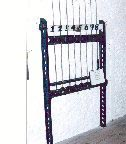
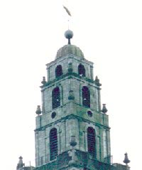

The Bells
Shandon's 8 bells, were made by Rudhalls of Gloucester.
They weigh over 6 tons and they first rang out over the city on December
7th 1752 for the marriage of Henry Harding and Catherine Dorman.
They were recasted in 1865 and in 1906 they were hung in a fixed position
so as to reduce vibration. It was said that when the bells were rung in a
swinging position the patients in the local hospital, the North Infirmary Charitable
Hospital shook in their beds.

The original inscriptions are retained on each bell:
When us you ring we'll sweetly sing
God preserve the Church and King
Health and prosperity to all our benefactors
Peace and good neighbourhood
Prosperity to the city and trade thereof
We were all cast at Gloucester in England by Abel Rudhall 1750
Since generosity has opened our mouths our tongues shall sing aloud its praise
I to the Church the living call and to the grave do summon all
The last bell, the tenor, weighs 26cwt. and also bears the name Daniel Thresher,
a great benefactor of the Church, who, in his will, left money to provide this bell.
It was the same Daniel Thresher who provided the Church of St Anne with a single bell
before the peal was introduced. This bell, dated 1745, now hangs in the Church of
St. Mary in Sundays Well. Our world famous bells can be rung on the first floor.

The Tower
The walls of the building are 7 feet thick and the height to the tower is 120 feet
and to this you can add another 50 feet for the pepper pot.
The McOsterich family were involved with the design and erection of this tower and
to this day a special privilege is afforded them. Whenever a member of the family marries,
anywhere in the world, the bells ring out in their honour.
On top of this pepper pot is a weather vane in the form of a salmon,
representing the fishing of the River Lee.
It is a very appropriate sign to have on top of a Church, as in the earliest Christian
days a fish was used as a symbol for the name of the Lord.
And now on to
Architecture Page 2